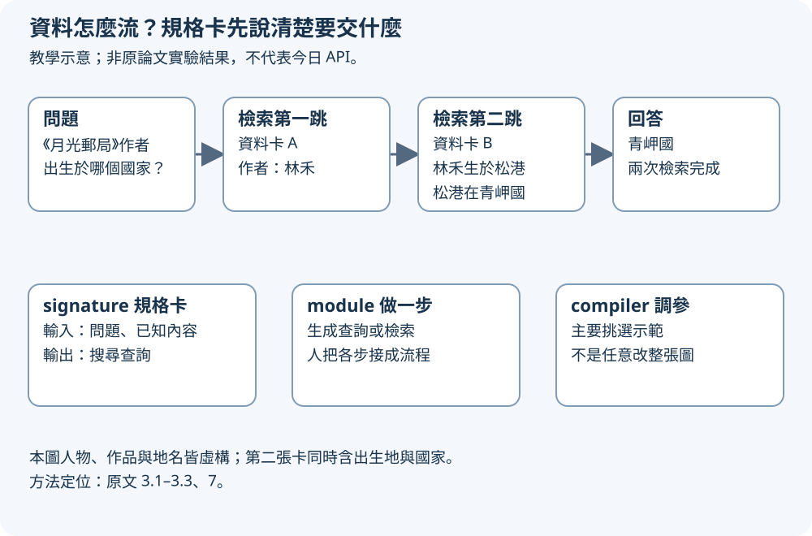
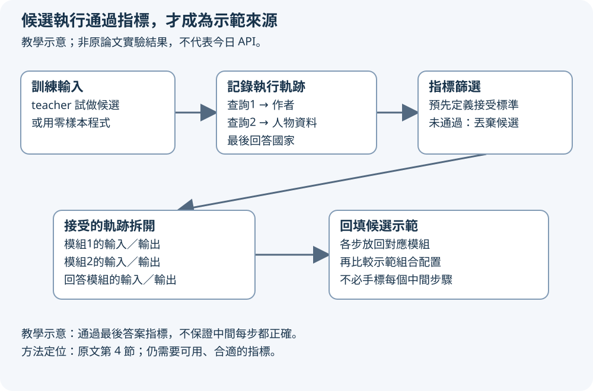
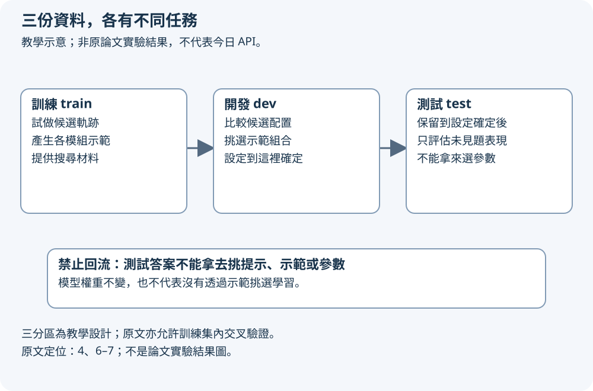

教學比喻：做團體報告時，先說清楚誰查作者、誰查出生地、最後交什麼答案，再替各步找好範例，比所有人共用一大段口頭叮嚀更容易調整。DSPy 把這種分工帶進語言模型程式，並用資料與指標挑選有效的示範。
先用兩份小資料，走完一題
以下是自編教學例，人物、作品與地名皆虛構，不是論文資料或實驗結果。問題是：「《月光郵局》的作者出生於哪個國家？」資料卡 A 寫著「《月光郵局》的作者是林禾」；資料卡 B 寫著「林禾出生於松港，松港位於青岬國」。
第一跳從作品查到作者；第二跳用作者查到出生地與其國家，回答「青岬國」。這裡兩跳指兩次檢索，第二張卡已同時給出生地與國家，不能只因作品→作者→出生地→國家有三條關係，就把它誤叫三次檢索。
為什麼拆開？直接拿作品名問國家，可能找不到人物資料。先取得林禾這個中間線索，才能形成下一個搜尋查詢。這個小例讓我們看見：答案依賴前面每一步傳下來的資訊。
Signature 是規格卡，module 才負責做一步
signature（簽章）宣告一步要收什麼、交什麼，例如「問題、已知內容→搜尋查詢」。它是輸入輸出規格，不是那一步已經完成，也不保證模型輸出正確。原文定位：3.1。
module（模組）是實作這一步的可呼叫單元。你可以用會先產生推理再回答的模組來實作同一份簽章；檢索模組則依查詢取回資料。人先組好資料流：產生查詢、檢索、累積內容、再產生查詢與檢索，最後回答。原文定位：3.2、7。
在小例裡，第一次查詢帶回林禾，第二次查詢必須帶上這個名字。欄位規格讓各步知道輸入輸出角色；整個程式決定這些欄位怎麼接起來。這兩層分開，才容易替換某一步的做法，而不把整段文字提示重抄一次。
先畫資料流，再寫每一步的規格

放大閱讀圖解 ↗ · 窄螢幕可在圖內左右滑動。

圖解文字說明
- 兩跳查詢與檢索
自編虛構資料：作品《月光郵局》→第一次檢索得作者林禾→第二次檢索得林禾出生於松港、松港位於青岬國→回答青岬國。第二次資料卡已包含地點與國家。
- 規格、實作、優化分工
signature 宣告問題與已知內容輸入、搜尋查詢輸出；module 實作查詢生成或檢索一步；人串好資料流，compiler 主要挑選各模組示範等可調部分，不是任意重寫整張圖。
Compiler 幫你挑怎麼提示，不是任意重寫流程
compiler（編譯器）在這裡指自動優化程式可調部分的機制，不是只把程式翻成機器碼。原文也稱其中的優化器為 teleprompter。它接收程式、訓練資料與評分指標，產出調整後的程式。原文定位：3.3–4。
本文主力是 bootstrap few-shot：先讓程式或 teacher 程式試做訓練題，再把通過指標的成功軌跡，轉成各模組可參考的少量示範。few-shot 就是在提示中給幾個輸入輸出例；bootstrap 在這裡是用程式自己的候選執行來產生這些例子。
它沒有保證能任意改出最佳整張圖。人仍要提供程式分解、可用模組與評分方式；優化器主要搜尋與挑選示範等可調參數。原文還研究集成，也就是並行跑多份程式後合併答案；更動態的測試期 bootstrap 與自動回溯在第 4 節被列為未來工作。
成功軌跡怎麼變成各步的示範？
軌跡是一次執行中各步的輸入輸出紀錄。自編小例的一條成功軌跡包括：帶作品名的查詢、取回作者、帶作者名的查詢、取回人物資料，以及最後答案。若最後通過預先定義的指標，就可把其中各步的輸入輸出回填為對應模組的候選示範。
這個設計省的是中間步驟標註。你不一定要人工替每道訓練題寫出兩次完美查詢；可先讓 teacher 試出候選，再依指標篩選。teacher 是產生候選執行的程式，未指定時可用待編譯程式的零樣本版本。原文定位：4，階段一。
但最後答對不代表中間每步都可靠。若指標只檢查答案「青岬國」，猜對或用錯證據也可能過關。因此指標是方法成立的前提；需要證據支持時，評分也該檢查證據，而不是期待優化器自動理解所有品質要求。這是對教學例的評估分析。
成功候選如何變成各模組示範

放大閱讀圖解 ↗ · 窄螢幕可在圖內左右滑動。

圖解文字說明
- 產生並篩選候選軌跡
在訓練輸入上執行 teacher 或零樣本程式→記錄各步輸入輸出→依預先定義的指標接受或拒絕整條候選軌跡。
- 回填示範與保留限制
接受的軌跡拆成對應模組的輸入輸出示範，再依開發資料比較候選配置。只檢查最後答案可能放過錯誤中間步；通過指標不是證明每一步正確。
三份資料，各有不同工作
訓練資料用來產生示範候選；開發／驗證資料用來比較候選程式、挑示範組合；測試資料保留到設定確定後才用來評估。三個角色要分開，否則分數可能只是對反覆看過的題目越調越好。
不能用測試題的答案挑參數，再把同一批題目的高分當成未見題表現。即使模型權重完全沒改，提示示範的挑選仍然是學習與調整，依然會造成資料洩漏。此圖採三分區的教學設計；原文也允許在訓練資料內做交叉驗證。原文定位：4、6–7。
小例需要很多同類但不同人物與作品的問題，才能分成三份；單一兩卡範例只用來看資料流，不能支撐泛化或提升幅度的實驗結論。
資料三分區：測試不參與選參數

放大閱讀圖解 ↗ · 窄螢幕可在圖內左右滑動。

圖解文字說明
- 訓練與開發各司其職
訓練集用來生成候選軌跡與示範；開發／驗證集用來比較配置、選示範組合。這裡採三分區教學設計，原文亦允許訓練集內交叉驗證。
- 測試留到最後
設定確定後才以保留測試集報告表現；禁止用測試答案挑提示或參數。即使不更新模型權重，挑示範仍是調整，不能洩漏測試資訊。
30秒自測（自編教學例）
模型權重一直沒改，但你反覆看測試題答案，挑出 few-shot 示範後取得高分。能把這個分數稱為未見題能力提升嗎？這是自編教學情境，不是論文實驗。
看答案與理由
不能。挑選提示示範仍是調整，測試答案已參與選擇，分數不能代表未見題提升；凍結權重不會自動防止資料洩漏。
應用訓練資料產生候選示範、開發／驗證資料挑配置，設定確定後才用保留測試資料做最後評估。
不必微調，不等於永遠不改權重
主線的 few-shot 優化可以凍結語言模型，只調提示裡的示範。權重是模型內部參數；示範是每次呼叫時放進上下文的資料，兩者不能混為一談。
原文另有 BootstrapFinetune，會利用產生的示範更新各 predictor 的模型權重。因此「DSPy 完全不改模型參數」是錯的；是否改權重要看選了哪種優化策略。原文定位：4，階段二。
這不是普遍的自我改善保證。若模型找不到成功候選、檢索拿不到需要的資料，或指標獎勵了錯誤捷徑，編譯未必有幫助。本文受控實驗聚焦數學應用題與多跳問答；第 8 節對更多任務的受控評估仍留待未來。這裡不描述今日 DSPy API 或產品功能。
深入：優化器實際搜尋什麼？
原文第 4 節把典型編譯分成候選生成、參數優化、高階程式優化。候選可涉及指令、欄位描述與示範，但這一版研究明確聚焦示範。收集到候選後，可用隨機搜尋等方法依指標挑選。
最簡的 BootstrapFewShot 在訓練輸入上執行 teacher，追蹤多階段輸入輸出，保留共同導致程式通過指標的軌跡。這不需要每個中間步驟都有人工標籤，但所需標籤仍依指標而定；不能一概稱為完全無監督。
高階優化的實例包括多份程式的集成。原文沒有在這裡交付任意圖結構搜尋，也沒有把測試期動態 bootstrap 與自動回溯當成已完成的功能。
讀者檢查成本時，也要交代候選數、驗證例數與模型呼叫預算；搜尋較久的配置，不能只憑分數就當成同成本提升。這是評估時應保留的比較界線，不是本教學另做的實驗結果。
數字與原文閱讀路線
原文第 6 節的 GSM8K 設定從官方訓練集抽 200 題訓練、300 題開發，最終評估使用約 1.3k 題官方測試集，並以模型輸出最後出現的數值判分。這說明指標定義本身也會影響哪些輸出被接受。
第 7 節的 HotPotQA 使用 200 題訓練、300 題開發，並從官方驗證集抽 1000 題作測試，因官方測試答案不可取得。不要把文中這裡的「測試」誤認為官方隱藏測試集。
同節報告微調後 T5-Large 的開發集 answer exact match 為 39.3%，passage accuracy 為 46.0%；exact match 是答案精確匹配指標。該設定使用 200 個標註輸入與 800 個無標註問題，以及 teacher 產生的資料。這是特定微調實驗，不是所有 DSPy 程式的提升幅度。
先讀 3.1 的 question → answer 小程式，再讀 3.2 的 RAG 程式，看檢索結果如何傳給回答模組；接著用 3.3 分清優化器的工作。接第 4 節追蹤成功軌跡如何成為示範，最後對照第 7 節的兩跳檢索程式與表 2。看結果時連第 6–7 節的資料切分一起讀，才知道哪些分數用來挑設定、哪些用來最終評估。
原文與來源
此頁依下列固定快照編寫；教學例子與程式片段用來解釋方法，請回到原文確認研究設定與結果。